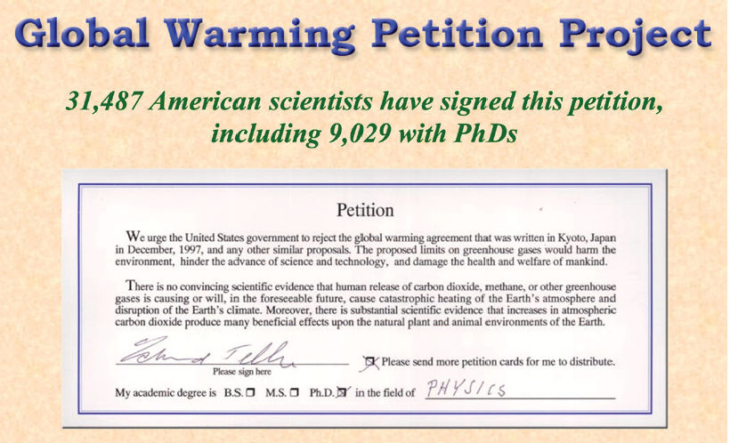

Identifying Fallacies about Climate Change
EES 3310/5310
Global Climate Change
Jonathan Gilligan
Class #18: Friday, March 5 2021
Merchants of Doubt
- A number of prominent physicists and chemists took money from big companies to sow doubt about science showing that …
- smoking causes cancer
- burning coal causes “acid rain”
- chlorofluorocarbon chemicals were destroying the stratospheric ozone layer
- burning fossil fuels causes global warming
- The same scientists kept appearing in these different propadanda campaigns

Merchants of Doubt
- In the 1980s, scientists working for big oil companies, like Shell and Exxon, concluded that burning fossil fuels would cause dangerous global warming
- The companies shut down the research
- Then they spent millions of dollars attacking climate science
- Exxon offered scientists $10,000 to write articles criticizing scientific reports about climate change
Oregon Institute of Science and Medicine
- Sounds fancy.
- It’s one room in a farmhouse at the end of a road in rural Oregon.
- In 1998: 2 people: Arthur B. Robinson and his 21-year-old son
- Circulated a document printed on glossy paper, typeset to look like an article from Proceedings of the National Academy of Sciences
- Claimed to prove that CO2 does not affect the climate
- Arthur Robinson also says that nuclear radiation is good for you
- And he has collected over 14,000 vials of human urine that he claims will extend his life and let him overthrow the “medical-industrial-government complex.”

Oregon Petition
- Asked readers to sign a petition saying that greenhouse gases do not affect the climate.
- They claim that 31,487 scientists have signed the petition
- No attempt to verify identities or credentials
- Signatories include:
- Characters from Star Wars
- Characters from the TV show M*A*S*H
- Michael J. Fox and Ginger Spice
- Credentials included over 1,000 veterinarians
- Almost all of the others claimed no expertise in climate science.
- Several members of Congress cited the petition

Example: Fake Experts Fallacies


In an experiment when participants are taught to see the Fake Expert fallacy in a tobacco ad, they were much less likely to be fooled by climate misinformation that used the Fake Expert fallacy.